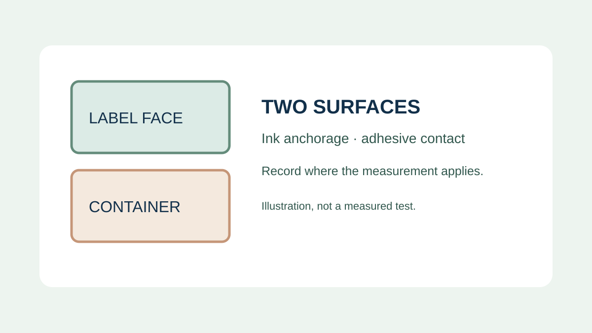
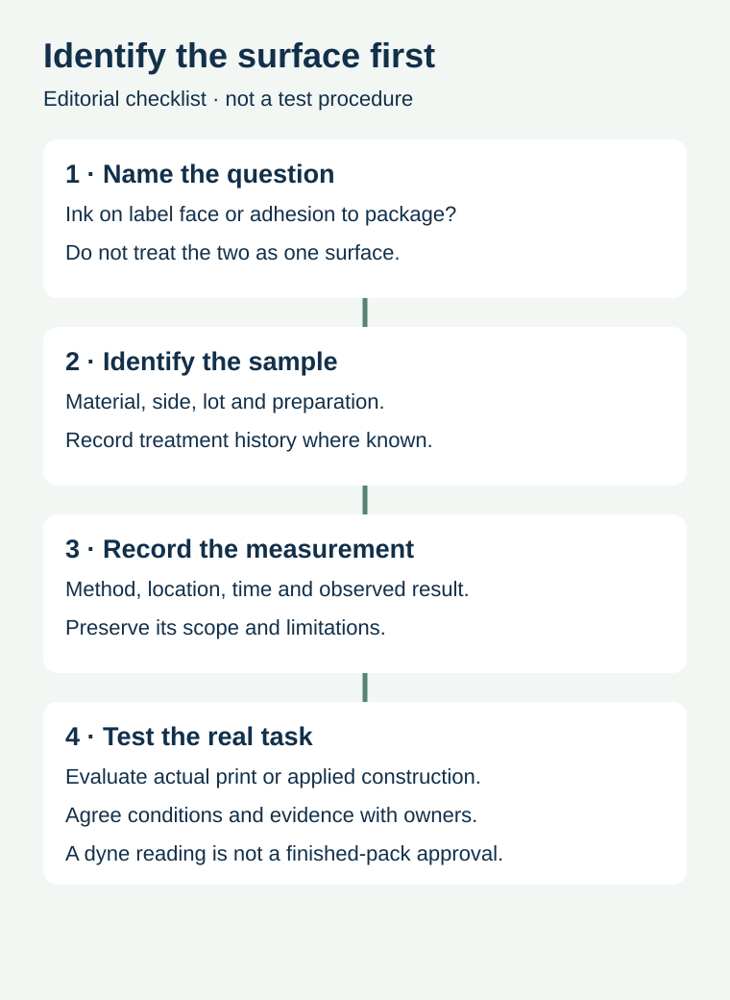

A supplier reports a surface-energy reading for a film label. A buyer uses the number to conclude that the label will stick to a plastic bottle. Those are different surfaces and different questions: ink meets the face of the label, while adhesive meets the container. A useful report first identifies which surface was measured and why.
Keep the label-print surface and the package-adhesion surface separate, then evaluate the complete construction under the intended process. A dyne reading can inform a discussion; it is not a universal pass mark for ink durability, adhesive performance or the finished food package.

Which side and which job?
The printer is concerned with how ink or another print process interacts with the label's printable surface. The packing operation is concerned with the adhesive contacting the actual bottle, tub or pouch. Each surface has its own material, history and contamination risks. A treatment or reading reported for one cannot be automatically assigned to the other.
Avery Dennison's surface-tension and corona-treatment bulletin discusses treatment and dyne testing in a label-film printing context. Its suggested ranges relate to the listed printing processes and materials; they are not adhesive-release thresholds for a food container.
Write the measurement on the right handoff


| Record | Question to answer | Do not infer |
|---|---|---|
| Surface | Label face, container exterior or another identified layer? | That the same value applies to both sides |
| Sample | Material, side, lot, area and known treatment history? | That a different supplier lot is identical |
| Method | Test method, fluid or tool reference, observation and time? | That an unrecorded test is directly comparable |
| Conditions | Storage, handling and surface preparation known to the owner? | That unknown exposure had no effect |
| Actual performance | What print or adhesion trial represents the intended use? | That one reading approves the finished package |
Understand the evidence boundary
A dyne test examines wetting behaviour of a specified test fluid on the tested area under the method's conditions. It is useful for investigating changes or process consistency, but a small measured spot does not characterize every surface or prove how a complete printed label will perform. Ask the qualified party which method was used, which locations were checked and how the reported result should be interpreted.
Surface treatment and its history can change; record what is actually known rather than assigning an assumed lifetime to a treatment. Do not use a test fluid on a food-contact surface or production pack unless the responsible site has approved the method and disposition of the sample. Do not alter treatment equipment or cleaning chemicals based on this purchasing guide.
Keep a print question separate from an adhesion question
Suppose a hypothetical converter reports that ink rubs off a printed film while a food packer also reports a lifting label edge. The two symptoms may occur together without sharing a cause. For print, retain the printed face, ink and finish references and the relevant print-process evidence. For adhesion, retain the complete label, actual container, application conditions and handling history. The respective specialists can decide which controlled comparisons are useful.
Avery Dennison's product selection guide discusses surface contamination and application conditions as factors in label selection. It does not certify the suitability of a particular ZFU label or food package. For comparable peel reports, see peel-adhesion report comparison; for print durability, use rub-test comparison.
Represent the actual package
Plastic family names are useful starting points, but two PP or HDPE containers may differ in formulation, finish, supplier, shape or surface history. Agree which actual variants enter a trial and preserve their identities. A standard panel or one bottle can help a comparison without proving that all future containers behave the same way. The HDPE and PP trial guide addresses the coverage of container variants.
For a print issue, ask the converter to connect the film lot, printable side, ink, finish and test method. For a package adhesion issue, provide the actual container, label construction, application temperature and intended later exposure. Record unknowns and the decision owner. A change to the package, treatment or label construction may warrant another review rather than silently inheriting an earlier result.
Send a precise request
Share which surface and performance question you need to resolve, the material and lot references where known, relevant application or printing conditions, and existing reports. Prepare a label specification inquiry; the contact page opens an email draft and lists email or WhatsApp for attachments. Testing and specific material capability must be confirmed for the project.